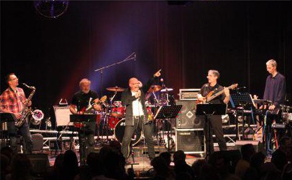
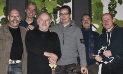
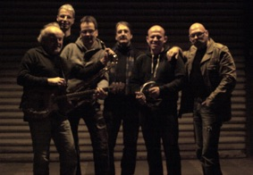
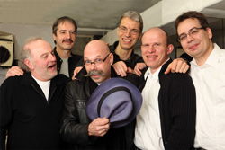
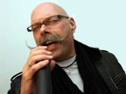
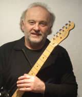
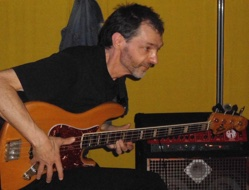
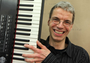
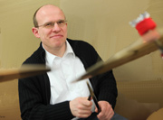

[DE MEN's]

Cover Music aus Solingen
Die Band
- Gegründet: 2008
- Mitglieder: 6
- Stil: Coverband
Was ging ab

De Men's wurde eigentlich mehr aus einer Laune heraus gegründet. Heino Krebs mit seiner langjährigen Spielerfahrung und Guido Palenschat mit seiner Lust am Gesang hatten immer mal die Idee in Richtung Musik was gemeinsam zu unternehmen.
Das lief allerdings mehr auf Sparflamme. Hier und da mal ein kleinerer Auftritt zu zweit, erst anlässlich eines runden Geburtstages eines guten Freundes wurde eine Band aus der Taufe gehoben. Der Überraschungsauftritt war sehr erfolgreich.
Martin Rempe, ein Gitarren spielender Bekannter im Publikum war dann der Initiator zur Gründung von De Men's.
So nach und nach gesellten sich weitere Musiker dazu, es gab dann auch einige Wechsel, bis sich schließlich Anfang 2009 die Band in ihrer heutigen Besetzung präsentierte.
Peter Thomas, Rigo und Heino Krebs schauen auf eine langen Werdegang als Bandmusiker zurück.
Reinhard Langner und Harald Reith sind von Kindesbeinen an Hobbymusiker.
Lediglich Guido Palenschat ist musikalisch eher ein unbeschriebenes Blatt. Mal abgesehen davon das er quasi in einem Schallplatten- und Instrumentengeschäft groß geworden ist und schon immer gern gesungen hat, ist bis zum Zusammentreffen mit Heino Krebs sein Gesangstalent eigentlich mehr der Dusche und dem Auto aufgefallen.
Das ist nun anders, mit den Bandkollegen wird nun regelmäßig Musik gemacht und sofern es die Zeit erlaubt, werden Möglichkeiten zu Auftritten immer wieder gerne genutzt
Was geht ab

De Men's zeichnet sich aus durch große Spiellaune, ein vielfältiges Repertoire, dem etwas anderen Arrangement und vor allem Spaß an Musik mit einem guten Sound. Die Playlist bietet für jeden was und wird ständig erweitert.
Stimmung und gute Laune, so lautet die Devise für kurzeilige Stunden mit De Men's.
Auf Weihnachtsfeiern, Geburtstagspartys oder auch Galaveranstaltungen, konnten die Jungs von De Men’s schon ihren Spaß an der Musik unter Beweis stellen. Öffentliche Auftritte auf dem Dürpelfest, dem Walder Pfingstochsenfest, oder im Gasthaus Schaaf sind ganz besondere Highlights für die Band, und sie freuen sich immer wieder über neue Herausforderungen.
Die Besetzung

- percussion, lead vocals / Guido Palenschat
- bass guitar, back vocals / Peter Thomas
- guitar, back vocals / Heino Krebs
- saxophon / Rigo
- keyboard / Reinhard Langner
- drums / Harald Reith
Musikalische Laufbahn
Guido (Palli) Palenschat (lead vocals)

Tja, da wird’s leicht unübersichtlich, als Kind eines Musik-Fachgeschäftes hatte man halt ein Instrument zu spielen. Dies war dann zunächst die obligatorische Blockflöte, gefolgt von einer „Melodika“
die ab und zu mit einer Mundharmonika getauscht wurde. Das alles aber eher dilettantisch und ohne richtigen Unterricht.
Während der Schule ist dann der Weg in den Schulchor die stilgerechte Variante gewesen, wobei alle Jungs den Bass singen durften, nur ich musste als einziger Kerl bei den Mädels stehen und brav Tenor singen (wie peinlich!).
Später köderten mich meine Eltern mit einer Hammondorgel, verbunden mit klassischem Klavierunterricht bei Herrn Evertzbusch (der Typ war so alt wie Methusalem und hatte auch eben solche pädagogische Fähigkeiten).
Das fand ich dann lange Jahre nicht so doll, und schließlich schmiss ich den Unterricht. Die Lust am Singen war aber immer noch ungebrochen. So genoss ich dann auch die intimen Momente im Bad oder im Auto, wo ich dann nach Herzenslust schmettern konnte. Erst Freund Heino Krebs ermunterte mich dann dazu, öffentlich zu singen, und mit De Men‘s kam‘s dann ja schließlich auch so.
Heino Krebs (guitar, back vocals)

Wurde mit 13 Jahren vom Gitarrenvirus angesteckt (nicht ahnend, dass es eine lebenslange Infektion ist) und wünschte mir sehnlichst eine E-Gitarre. Meine Eltern schenkten mir dann eine Konzertgitarre, mit der Auflage wöchentlichen Gitarrenunterrichts. Noten lernen und auf Nylonsaiten rumzupfen, war zwar nicht mein Ding, aber wenigstens hatte ich eine Gitarre. Ein Jahr habe ich durchgehalten, dann war Schluss mit lustig. (Die Konzertgitarre habe ich noch!) Ferienjobs und Oma`s Röhrenradio ermöglichten mir den Kauf der ersten E-Gitarre.
1967
Gründung der Schülerband „The Canadian Drums“. Mit Schlagzeug, Bass, Gitarre und den ersten drei Akkorden wurde drauflos gespielt. War zwar nicht der Knaller, aber sehr laut und machte viel Spaß.
Nach der Schulzeit kam die Band „ESSAY“. Wir waren schon besser, und spielten eigene deutsche und englische Rocksongs. Akkorde konnte ich auch schon ein paar mehr! Auftritte folgten und 1974 ein zweiter Platz im Talentwettbewerb. Wir hatten dann genug von eigener Rockmusik. Ein Sinneswandel durchzog die Band. Aus „ESSAY“ wurde „ON THE ROCKS“, die Musiker mischten sich neu, und die Musikrichtung auch. Jetzt wurde gecovert.
Hier traf ich auf den Bassisten Frank Bröcker. Jahre später wurde unsere Musik kommerzieller und wir nannten uns „SKYLINE“.
15 Jahre in dieser Band, viele Auftritte (auch auf dem Dürpelfest) brachten Erfolg.
1992 kam dann das Gitarren-Burnout. Die Klampfe wurde an den Nagel gehängt, und das gesamte Equipment verkauft. Der 50 jährige Geburtstag eines Freundes ließ mich 2007 wieder zur Gitarre greifen. Da war es wieder, das verdammte Virus. Die Band „De Men‘s“ wurde gegründet. Froh bin ich drüber. Es macht wieder richtig Spaß. So isses nun mal mit dem Musikerleben….
Peter Thomas (bass guitar, back vocals)

Nach einer klassischen Klavierausbildung kam im Alter von 13 Jahren die Gitarre bei mir autodidaktisch hinzu. In der ersten Band,
mit zunächst zwei Gitarren, musste sich dann der vermeintlich schlechtere Gitarrist im Alter von 16 Jahren etwas anderes einfallen lassen.
So bin ich an meinen Fender Jazz Bass gekommen. Nach über 30 Jahren Funk, Rock, Schlagern sowie Soulmusik unter anderem bei „Secret Mail“,
den „Vagabunden im Hossarausch“ und „Musixx & the crazyy hornzz“ hatte ich dann dem Bandleben 2010 den Rücken gekehrt.
Auch die „Mühlenhof Connection“ verlor dadurch leider beim „A cappella“ ihren Tenor. Ich setzte mich wieder ans Piano,fing an spontane
Stücke mit neuen Musikerkollegen zu komponieren und habe seitdem einige „unplugged“ Aktivitäten und Auftritte. Unter anderem im Kontakthof
und beim SingSong in Wuppertal. Solo und mit verschiedenen Duos wie „Einklang“ und dem „DoppelPeter“ bin ich hier musikalisch unterwegs.
2014 packte ich bei der monatlichen Blues-Session in Wuppertal Cronenberg erstmals wieder meinen Bass aus. Und im Mai 2016 juckten mir
dann auf einem Straßenfest mit LIVE Musik wieder die Bass Finger. Da erzählte mir eine Freundin, dass „De Men‘s“ einen neuen
Bassisten suchen. Ich zierte mich zunächst ein wenig, bekam dann einen Tritt von meiner Frau, rief Heino Krebs an und erschien
mit „Fender“ und „Brüllwürfel“ zu einer Probe. Da war es geschehen. Nun bin ich froh darüber, dass ich nicht alle meine Bässe verkauft habe.
Großen Spaß habe ich mit den Jungs. Nach genau sechs Jahren Bandabstinenz bin ich nun seit Oktober 2016 dabei. Meine Frau ist von den
Songs begeistert und die Freundin freut sich auf die nächsten Auftritte von „De Men‘s“.
Reinhard Langner (keyboard)

Als Kind habe ich 6 Jahre Klavierunterricht „genossen“. Wie damals üblich kamen die Stücke alle aus dem klassischen Bereich. Über die Glenn Miller Schallplatten des Vaters habe ich Gefallen an Jazz bekommen. 30 Jahre habe ich dann mit den Klavierkenntnissen herum geklimpert und auch mit Synthesizer und Keyboard „experimentiert“.
2008 habe ich mir ein Herz gefasst und beim Solinger Jazzworkshop teilgenommen. Dort habe ich viel gelernt – vor allem wie viel Spaß es macht, in einer Band zu spielen. 2009 bin ich dann zu De Men’s gestoßen und der Spaß hält sich weiterhin auf hohem Niveau.
Harald Reith (drums)

Das erste Instrument - Waschpulvertrommeln. Nachdem ich mich mit diesem „Instrument“ zum ersten mal vor die Haustür meiner
Eltern an die Straße gesetzt habe, hatten sie ein Einsehen – ich bekam ein Kinderschlagzeug. Wo das hinführen kann, sieht man heute…
Neben dem gesamten Schlagwerk habe ich mich mit dem Klavier und der Querflöte (war irgendwann die Schlepperei leid) beschäftigt. Bezüglich der Musikrichtung ist alles erlaubt, was Spaß bringt. So habe ich mich auch schon in den Bereichen der sinfonischen Musik und der Blasmusik getummelt. Höhepunkt meiner bisherigen Aktivitäten war eine mehrwöchige Konzertreise mit einem semiprofessionellen Akkordeonorchester durch Neuseeland.
Seit einigen Jahren spiele ich mit viel guter Laune bei De Men´s!
Video